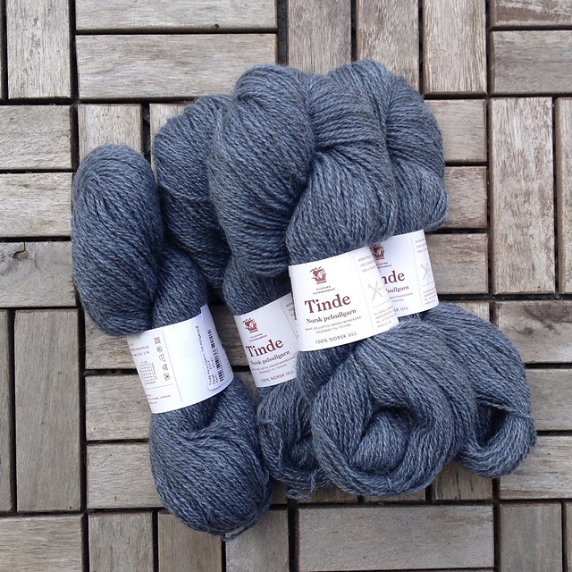

Knitting
I design lace shawls and scarves, as well as stranded colourwork accessories. All my patterns are available either for purchase or for free download on Ravelry. Selected patterns are available on Payhip.
I also maintain lists of yarn shops in Oslo as well as Norwegian yarn companies and Norway-based handdyers.
My articles about knitting can be found here.
Along the Whale Road highlights yarns from Norway, Denmark, Gotland, Öland, the Isle of Man, Iceland, Shetland, the Orkneys, the Faroes, and the Hebrides -- all places where Norsemen visited, settled, and sometimes conquered. The landscapes of the Eastfold and Norwegian folk music inspired these shawls and scarves. Denne kolleksjonen inneholder 4 oppskrifter: 1 hver til votter, pulsvanter, lue og hals. Tradisjonelle norske mønster med ny vri.
A mini-collection with 4 patterns for mittens, wristers, beanie, and cowl all featuring traditional Norwegian motifs.  A list of some yarn companies that source their fibre and spin their yarn here in Norway, as well as handdyers based in Norway. Some local yarn shops in Oslo. In addition to patterns, I also write articles about knitting.
Along the Whale Road: Pattern Collection

Dreams of Norway: Pattern Collection

Strikk fra Søndre Nordstrand/Knitting from Søndre Nordstrand: eBook

Norwegian Yarn Companies & Norwegian Handdyers
Oslo Yarn Shops

Articles About Knitting

© Lanja Khon-Engheim, 2022